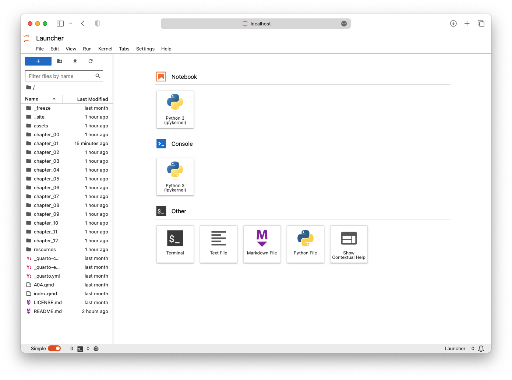

1 + 12Welcome to the first hands-on section of the course. You will familiarise yourself with the tools you will be using, ensure that all works as it should, and prepare for some Python code.
Before you start, ensure you have carefully read and followed the instructions outlined in the Infrastructure section and have a working installation of Python and some Jupyter Notebook IDE, either via Jupyter Lab (recommended) or on Google Colab.
Spatial Data Science depends on code, and coding environments can be unfriendly to an average user. People designing the tools are often computer scientists or have a strong knowledge of CS-related environments. It means we sometimes need to deal with tools that look a bit scary, like a Terminal or a Command line. Below is a brief introduction to the tools you will need for this course.
Depending on your operating system, you will have either Terminal (macOS, Linux) or Anaconda Prompt application installed. It will look like this:

Terminal (and Anaconda Prompt or Command line, but we will refer to all as the terminal for simplicity) is used to interact with applications that do not have any graphic interface or with the apps that do have one, but you want to use them programmatically. The terminal usage is straightforward. Let’s start with a few examples.
You want to see a list of files and folders you have in the folder. First, you need to navigate to the folder. For that, you can use the cd command, which stands for change directory.
cd courses/sds/Let’s assume that you have the folder with course material in the folder called sds in another folder called courses. The full command is then composed of the cd part, saying set the current directory to… and waits for the parameter, which is a path to the folder in this case - courses/sds/.
Once in the correct folder, you can use another command, ls, which stands for list and allows you to list the contents of the current directory.
lsThe output would look like this:
ls command.You can also pass a parameter -l, specifying that you want a long listing including attributes.
ls -lThat changes the output to this:

ls -l command.The syntax is always the same, starting with the app name and then followed by parameters.
If you followed the installation of Python described in the infrastructure section, you have used conda with parameters specifying that you want to use it to create an environment based on an environment.yml file. But what is conda?
Conda, is a tool you will use to create “environments” and install Python and Python packages. It is a package manager, ensuring all the necessary parts work together. For example, if you want to create a new environment and install Python in it, you type the following command in your terminal.
conda create -n my_environment pythonYou don’t need to do that now but it is useful as you will probably need that at some point later. You can check more in the documentation of conda.
Conda is not the only way of setting up a Python environment. If you don’t want to install anything on your local machine, you can use Google Colab, which gives you an environment with Python and an interface to work with Jupyter Notebooks.
While you can interact with Python from the terminal, it is inconvenient. Instead, you will use Jypyter Notebooks and Jupyter Lab. Jupyter Notebooks are documents that allow you to mix text and code, execute small pieces of code one at a time and include graphical outputs of your code. Jupyter Lab is a handy interface that allows you to work with multiple notebooks and switch between your Python environments created with conda.
It is time to say goodbye to the terminal and start Jupyter Lab. You should ensure you have your sds environment activated first:
conda activate sdsThen you can start Lab using:
jupyter labThis command should open your browser and load the Jupyter Lab interface.

In the launcher, we can create a new Notebook by clicking on the Python logo representing our current environment. If you have more of them, you will see them there, as well as other environments using different programming languages like R or Julia.
The notebook is composed of cells. This is a cell:

Cells can contain either code or text. A typical notebook is then a series of cells where some include text describing what is happening while others contain the code, either waiting for execution or already executed. The cells with the executed code may also contain outputs.
You can start with simple math that Python can do natively. Run the following code cell. To do that, you can either click the “play” button on top or hit Shift + Enter:
1 + 12You now have a code cell with the output. Jupyter Lab automatically created a new cell. Change its type to Markdown and write a short text describing what the cell above does.
Text cells can be formatted using the Markdown syntax. Markdown is a way of using plain text to write documents that can later be formatted by a rendering engine (Jupyter Lab is the rendering engine in this case). Unlike \(\LaTeX\), it is very lightweight.
In a cell of a Markdown type, you can:
- create
- simple
- listsIf you need numbering, you can:
1. create
2. numbered
3. lists
1. or nested
2. lists within lists
4. that may continue belowYou can also include links:
Wrap a word that shall be a [link](https://github.com) in square brackets followed by
round brackets with the URL.Wrap a word that shall be a link in square brackets followed by round brackets with the URL.
Or include images, using a very similar syntax.

Markdown has a few flavours, which are often compatible but some marks are unique to distinct flavours. You can therefore write italic using underscores _italic_ or using stars *italic* around the text you want to adapt. The same applies to bold, with two underscores or stars **bold**.
You can further include mathematical formulas using \(\LaTeX\). Either using the inline syntax $e = mc^2$ which renders as \(e = mc^2\) or as a proper formula:
$$
I = \frac N W \frac {\sum_{i=1}^N \sum_{j=1}^N w_{ij}(x_i-\bar x) (x_j-\bar x)} {\sum_{i=1}^N (x_i-\bar x)^2}
$$\[ I = \frac N W \frac {\sum_{i=1}^N \sum_{j=1}^N w_{ij}(x_i-\bar x) (x_j-\bar x)} {\sum_{i=1}^N (x_i-\bar x)^2} \]
Markdown can also do tables, like this one:
| Language | Year |
| -------- | ---- |
| Python | 1991 |
| R | 1993 |
| Julia | 2012 |
| Rust | 2015 || Language | Year |
|---|---|
| Python | 1991 |
| R | 1993 |
| Julia | 2012 |
| Rust | 2015 |
For structuring the documents, Markdown offers up to six levels of headings.
# Heading level 1
### Heading level 3
##### Heading level 5
While you can also use basic HTML within Markdown (the cell is rendered in the browser anyway), please try to avoid doing so and stick to vanilla Markdown if possible. The inclusion of HTML tends to break some rendering engines and alter the expected visual style of the resulting document.
Jupyter Notebooks are great and have a lot of built-in features that can improve your quality of life.
While you can run the code cell by clicking on the ▶ button on the top, try creating muscle memory for Shift + Enter instead. You’ll be much faster.
Learn to use Tab. It provides you with all possible actions you can do after loading in a library and it is used for automatic autocompletion. Try hitting Tab while writing the code below.
import math
math.pi3.141592653589793As you have noticed, Jupyter gives you options on what you can import or use. It also remembers all the variables so you don’t have to type them next time.
variable_name_that_got_super_long = 42
1 + variable_name_that_got_super_long43Each Python function comes with documentation. You can fetch and display it directly in the Notebook using Shift + Tab. Try using it in the cell below.
math.sin(math.pi)1.2246467991473532e-16Each cell can be either in the edit mode or in the command mode. Edit mode allows you to change the contents of the cell. In the case of code cells, it looks nearly the same as the command mode but in the case of Markdown cells, edit mode shows the plain text with the Markdown syntax while the command mode shows the rendered text. You can enter the edit mode by hitting Enter.
Command mode moves you away from editing individual cells and allows you to use keyboard shortcuts to manipulate the notebook. You can enter the command mode by hitting Esc.
When you are in command mode, you can use a wide range of keyboard shortcuts. For example:
Things may get stuck or break completely. When that happens:
Kernel > Interrupt -> your cell should stop runningKernel > Restart -> restart your notebookThis course won’t cover the very basics of Python. You may be able to catch it along the way but if you prefer more explicit material, have a look at A taste of Python section of the Geo-Python course by D. Whipp, H. Tenkanen, V. Heikinheimo, H. Aagesen, and C. Fink.
The Jupyter Notebook section is inspired by Data manipulation, analysis and visualisation in Python by Joris Van den Bossche and Stijn Van Hoey licensed under CC-BY 4.0.